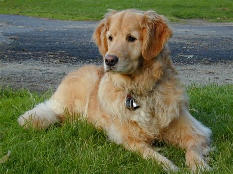

Golden Retrievers are among americas most popular dog breeds. They are good hunting dogs as well as guide dogs for the blind. The are also used for search and rescue. They are very obedient dogs and have an enduring love for their owners. Golden Retrievers are sturdy, muscular dogs for a medium size. Owning a dog is a responsibility. They depend on us for food and shelter and deserve all the love that they have to offer. Owning a dog is a commitment that you need not take lightly. Golden Retrievers are among the most frequently registered breeds in several Western countries. They are outgoing, trustworthy, and amazing family dogs. We love our Golden Retrievers and want to share our experience with you. Our website is here to help Golden Retriever owners take care of their dogs and learn how to help them be healthy and happy their whole life. Looking for help with your Golden Retriever, look no further. We will share free tips and training information along with health, and behavior issues.
